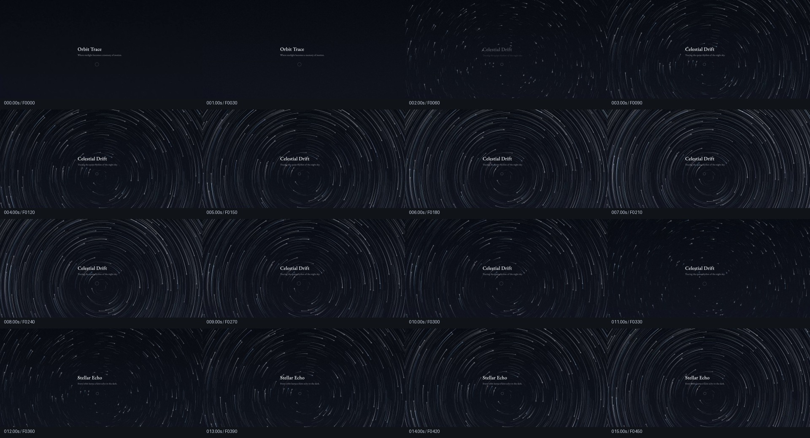
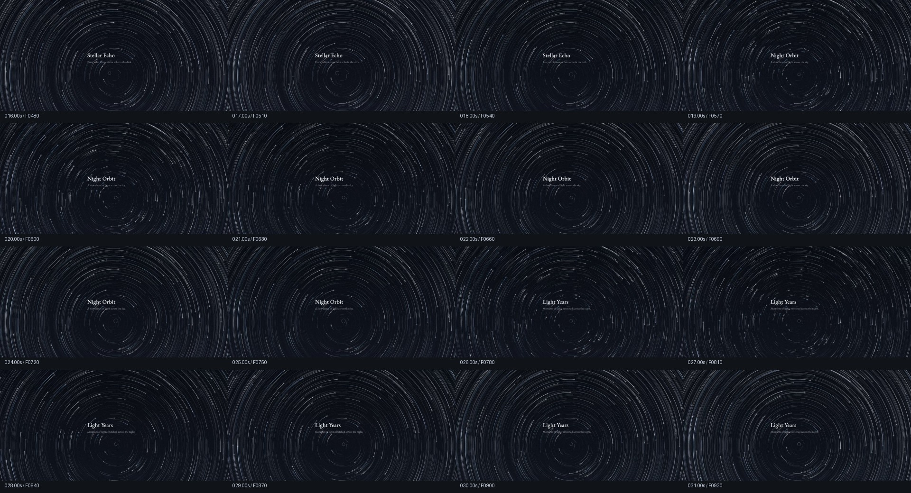
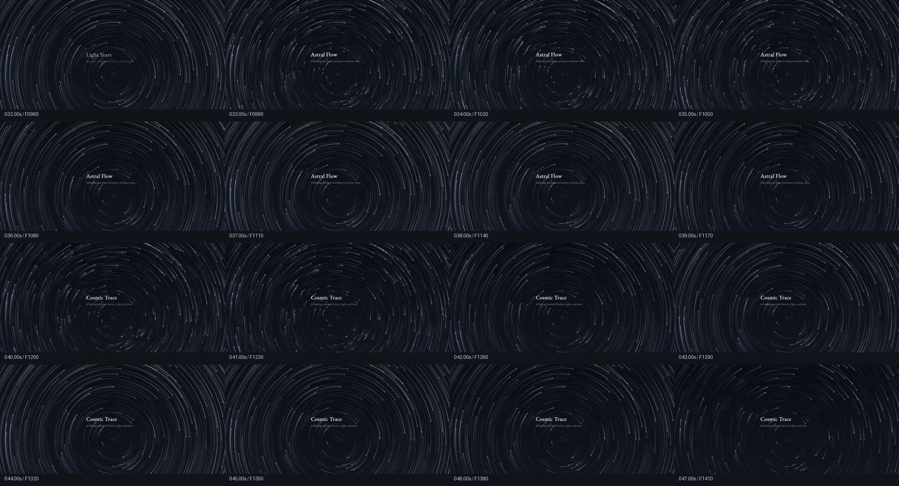
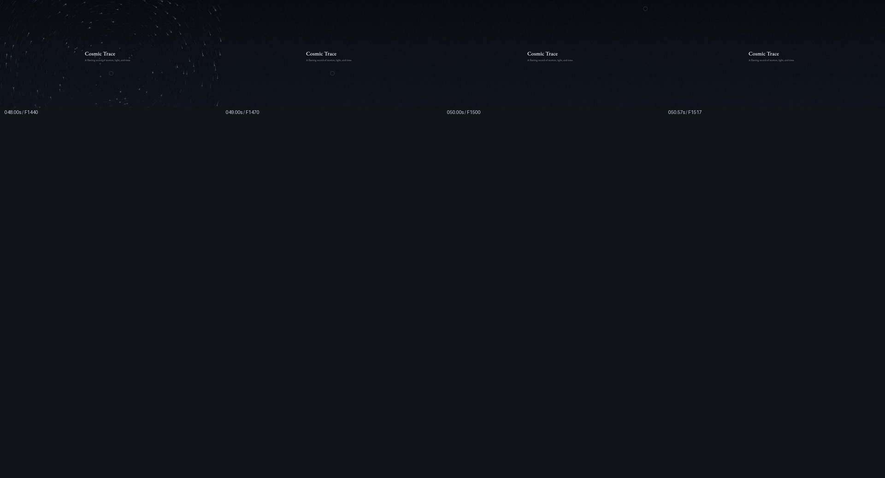

REFERENCE STUDY / 2026.10.30
Astral Flow
原视频逐帧分析与实现依据。已按解码顺序处理全部 1,518 帧，计算画面变化数据；对逐秒总览和关键帧进行了视觉复核。下方可逐帧查看原片、对应数据及阶段说明。
视频包含标题轮换、增长与减弱的多个阶段。网页按 prompt_01.txt 的交互要求实现：固定 Astral Flow 标题、固定偏下圆心，按住积累，松开后约 1.05 秒消散。原片用来确定光感、弧线和构图，不作为网页自动播放时间轴。
逐帧查看
方向键可逐帧移动；拖动时间线或点击下方曲线、关键帧和数据行可定位。播放时以浏览器呈现的帧更新；单帧定位采用帧中点，避免压在两帧边界。
全部 1,518 帧的画面变化
纵轴为相对首帧的正亮度差，横轴为 0–50.6 秒。约 7.4 秒后第一轮亮度下降，11 秒附近进入低谷后重新增长；结尾 48.2 秒后大部分光迹已经消失。
| 帧 | 时间 / s | 平均亮度 | 亮度增加 | 变化面积 / % | 帧间变化 |
|---|
表格显示当前帧前后各 5 帧。完整数值保存在 frames.json。
关键帧与画面判断
运动与光感
- 真实圆周运动：同一颗星的轨迹始终与同一个圆心相切，屏幕边缘也遵循相同曲率。外圈半径更大，因此同样角速度会产生更长的可见弧线。
- 星头比尾部明亮，亮星只占少数。银白色主导，少量冰蓝色；尾部细、低亮，随时间减弱。光晕只围绕少量星头出现。
- 半径、起始角、亮度和弧长不规则。中心区域留白，外圈密度更高。曲线有清楚的起止点，长期按压也应保留短弧与断开区域。
- 原片标题出现 Orbit Trace、Celestial Drift、Stellar Echo、Night Orbit、Light Years、Astral Flow、Cosmic Trace。网页根据文字需求固定为 Astral Flow。
- 尾部消散不应带走静态星点、标题和中心圆环。再次按压时从星体保留的位置继续运动，不连接不连续的位置。
对应实现参数
| 项目 | 实现 |
|---|---|
| 构图 | 桌面圆心 (50%, 67%)；手机 (50%, 65%)；标题中心约 49% / 48%。 |
| 粒子 | 桌面 360 / 低性能 280；手机 240 / 低性能 200；减少动态偏好 160。 |
| 轨道 | 屏幕位置随机采样转换为极坐标；最小半径 44 CSS px；半径覆盖四角。 |
| 角速度 | 0.12–0.37 rad/s，统一主方向、独立随机速度；使用秒级 deltaTime 积分。 |
| 启动 | 约 0.34 s 平滑加速；0–2.7 s 分批激活。 |
| 历史 | 每颗星 384 个固定槽，约 30 Hz 采样；寿命 3.2–10.2 s。 |
| 光迹 | 每帧统一从有限真实历史生成连续圆弧，按样本年龄指数衰减并柔化寿命边缘，连接到实时星头；已移除周期性重建，详见第二轮闪烁分析。 |
| 星头 | 显示层单独合成小光点；辉光纹理只创建一次，少量亮星采用 lighter 混合。 |
| 释放 | 立即冻结完整动态画面，只用单条平滑透明度曲线淡出；1.05 s 后清理缓冲区并停止 RAF；释放期间运动时间暂停。 |
| 输入 | Pointer Events、pointer capture、cancel、lost capture、blur、visibilitychange；Space / Enter，多输入源合并。 |
| 性能 | DPR 上限桌面 2、手机 1.75、低性能 1.25，并限制像素预算；静态背景不逐帧重绘；无逐帧 React State 更新。 |
逐秒画面总览




量测方式：完整解码原片，每帧缩至 739 × 360；以灰度近似亮度。固定遮罩排除主要标题区域、中心圆环附近与底部水印；变化面积定义为相对首帧增加超过 8/255 的像素占比。轻微镜头位移、压缩与遮罩之外的文字会影响数值，因此曲线用来定位视觉变化，不能据此推断原始按压事件或反推出精确粒子数量、角速度。所有参数是依据视觉目标调试得到的实现选择。
实现验收：10 项 Chromium 浏览器测试通过；覆盖 1440 × 900、1920 × 1080、390 × 844、768 × 1024，短按、8 秒与 46 秒长按、释放、再按、取消、移出画面、键盘、后台状态、尺寸变化、高 DPR 与减少动态偏好。60 / 120 / 144 Hz 为受控时间步进验证，触屏为浏览器设备模拟；另行录制了真实时间运行的 交互演示。完整记录见 验收记录。